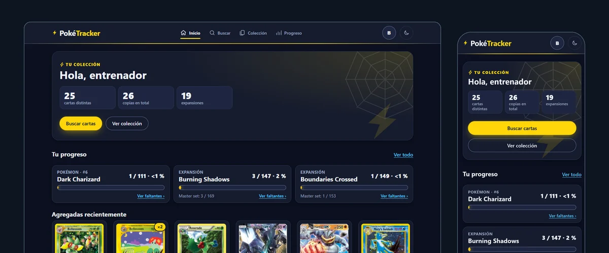

PokeTracker
En líneaIdeé, desarrollé y desplegué una app web para coleccionistas de cartas Pokémon TCG: buscas un Pokémon, ves todas sus cartas y marcas las que tienes. Tiene login con Google, base de datos con seguridad por usuario (RLS) y datos de cartas en vivo desde una API GraphQL.